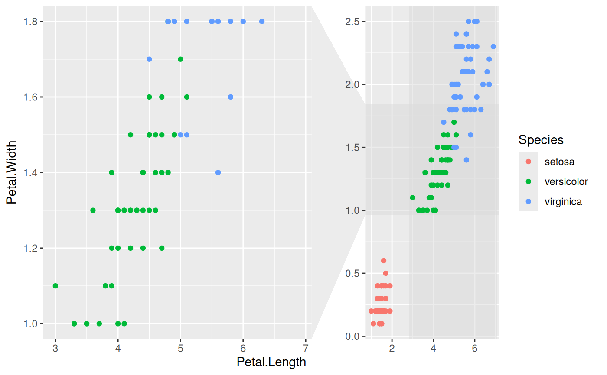
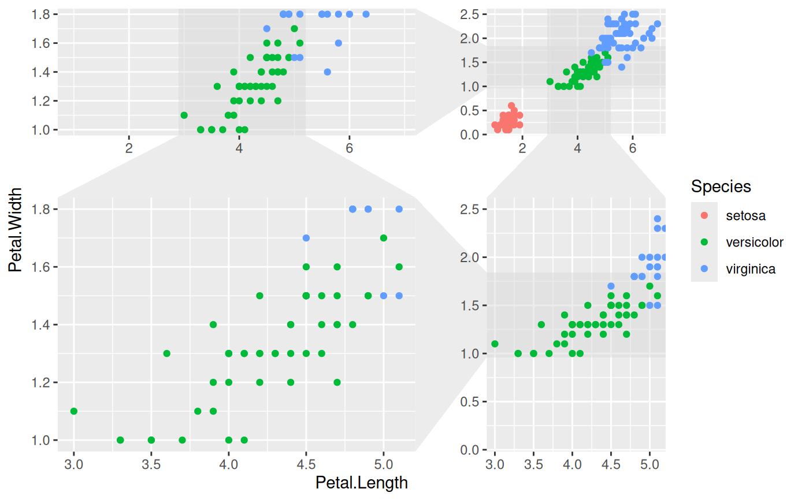

Facet data for zoom with context
facet_zoom.RdThis facetting provides the means to zoom in on a subset of the data, while keeping the view of the full dataset as a separate panel. The zoomed-in area will be indicated on the full dataset panel for reference. It is possible to zoom in on both the x and y axis at the same time. If this is done it is possible to both get each zoom separately and combined or just combined.
facet_zoom(x, y, xy, zoom.data, xlim = NULL, ylim = NULL, split = FALSE, horizontal = TRUE, zoom.size = 2, show.area = TRUE, shrink = TRUE)
Arguments
| x, y, xy | An expression evaluating to a logical vector that determines the subset of data to zoom in on |
|---|---|
| zoom.data | An expression evaluating to a logical vector. If |
| xlim, ylim | Specific zoom ranges for each axis. If present they will
override |
| split | If both |
| horizontal | If both |
| zoom.size | Sets the relative size of the zoom panel to the full data
panel. The default ( |
| show.area | Should the zoom area be drawn below the data points on the
full data panel? Defaults to |
| shrink | If |
See also
Other ggforce facets: facet_grid_paginate,
facet_stereo,
facet_wrap_paginate
Examples
# Zoom in on the versicolor species on the x-axis ggplot(iris, aes(Petal.Length, Petal.Width, colour = Species)) + geom_point() + facet_zoom(x = Species == 'versicolor')# Zoom in on versicolor on both axes ggplot(iris, aes(Petal.Length, Petal.Width, colour = Species)) + geom_point() + facet_zoom(xy = Species == 'versicolor')# Use different zoom criteria on each axis ggplot(iris, aes(Petal.Length, Petal.Width, colour = Species)) + geom_point() + facet_zoom(x = Species != 'setosa', y = Species == 'versicolor')# Get each axis zoom separately as well ggplot(iris, aes(Petal.Length, Petal.Width, colour = Species)) + geom_point() + facet_zoom(xy = Species == 'versicolor', split = TRUE)# Define the zoom area directly ggplot(iris, aes(Petal.Length, Petal.Width, colour = Species)) + geom_point() + facet_zoom(xlim = c(2, 4))# Selectively show data in the zoom panel ggplot(iris, aes(Petal.Length, Petal.Width, colour = Species)) + geom_point() + facet_zoom(x = Species == 'versicolor', zoom.data = Species == 'versicolor')